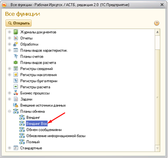
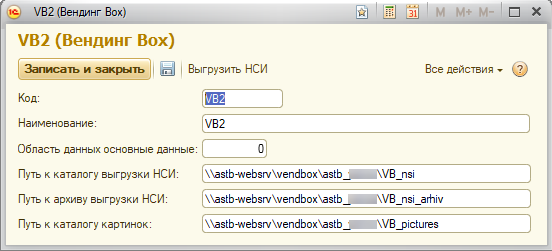
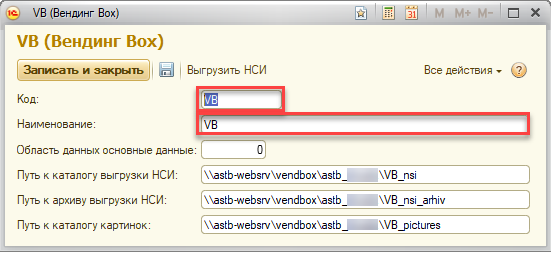
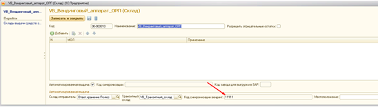
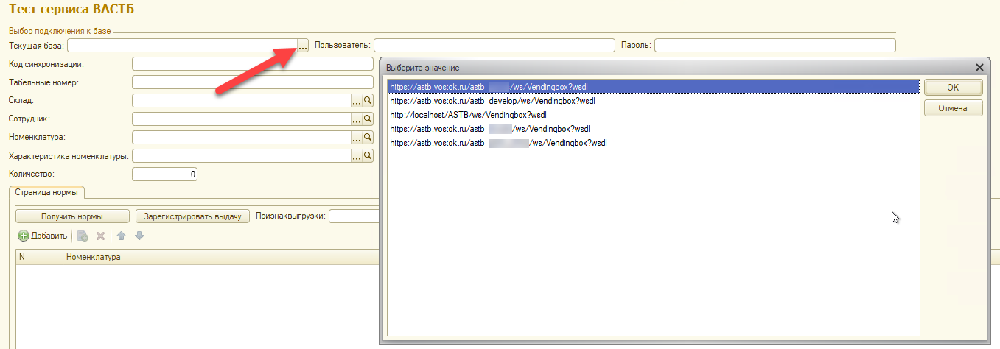

Для запуска аппаратов VendigBox:
1. Создаем папку «astb_****» на vendbox (\\astb-websrv)
Для получения доступа к ftp, обратитесь к IT ЦО
2. Внутри создаем папки «VB_nsi», «VB_pictures», «VB_nsi_arhiv»
3. В номенклатурах, выдача которых планируется через аппарат, проставляем признак «автоматизированная выдача», добавляем в номенклатуру картинку 600x600 пикселей, на белом фоне
4. При помощи плана обмена «Вендинг Вох» выгружаем в папки соответствующую информацию (NSI – таблица номенклатуры, Pictures- картинки, Archiv – тоже номенклатура)
Для этого открываем план обмена:

Нажимаем «Создать»:

Придумываем код и наименование, указываем путь к каталогам на ftp:

Сохраняем, закрываем. Выделяем созданный план обмена, нажимаем «Зарегистрировать изменения». После нажатия в информацию на выгрузку попадут все номенклатуры, которые есть в базе с признаком «автоматизированная выдача».
В дальнейшем при выгрузке будут выгружаться изменения (добавленные или измененные номенклатуры).
В базе создаем склад вендингового аппарата, транзитный склад, указываем в складе вендингового аппарата склад-отправитель.
Сообщаем ведущему специалисту (уточнить у сотрудников отдела АСТБ), какую базу настраиваем, он вносит изменения в обработку «ТестСервисаАСТБ» (добавляет туда новую базу) и переопубликовывает базу. (Временное действие)
Сотрудникам Vending Box сообщаем код синхронизации аппарата в АСТБ:

, место хранения папок на ftp и wsdl (описание веб-сервиса) этой базы.
Чтобы получить wsdl:
1. Открываем отредактированную обработку, нажимаем на … «Текущая база».

2. Копируем адрес интересующей базы.
3. Вводим этот адрес в браузере
4. Вводим админский логин пароль
5. Откроется страница с xml – текстом
6. Нажимаем правой клавишей, сохраняем в xml-документ